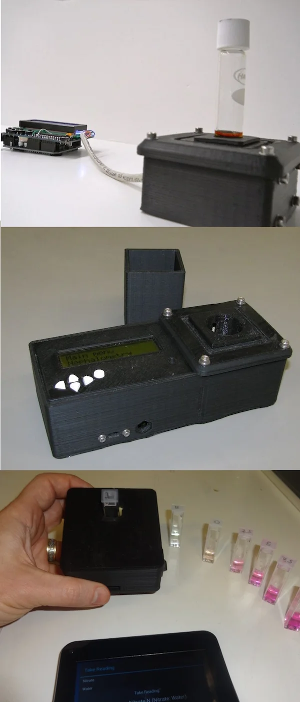

Never in all their history have men been able truly to conceive of the world as one: a single sphere, a globe, having the qualities of a globe, a round earth in which all the directions eventually meet, in which there is no center because every point, or none, is center — an equal earth which all men occupy as equals. The airman's earth, if free men make it, will be truly round: a globe in practice, not in theory.
Science cuts two ways, of course; its products can be used for both good and evil. But there's no turning back from science. The early warnings about technological dangers also come from science.
What was most significant about the lunar voyage was not that man set foot on the Moon but that they set eye on the earth.
A Chinese tale tells of some men sent to harm a young girl who, upon seeing her beauty, become her protectors rather than her violators. That's how I felt seeing the Earth for the first time. I could not help but love and cherish her.
For those who have seen the Earth from space, and for the hundreds and perhaps thousands more who will, the experience most certainly changes your perspective. The things that we share in our world are far more valuable than those which divide us.
The Final Frontier

There can be no thought of finishing for ‘aiming for the stars.’ Both figuratively and literally, it is a task to occupy the generations. And no matter how much progress one makes, there is always the thrill of just beginning.
There can be no thought of finishing for ‘aiming for the stars.’ Both figuratively and literally, it is a task to occupy the generations. And no matter how much progress one makes, there is always the thrill of just beginning.
The dreams of yesterday are the hopes of today and the reality of tomorrow. Science has not yet mastered prophecy. We predict too much for the next year and yet far too little for the next ten.
Spaceflights cannot be stopped. This is not the work of any one man or even a group of men. It is a historical process which mankind is carrying out in accordance with the natural laws of human development.
Reaching for the Stars
How to Make Free, Open Source Laboratory Hardware

To go places and do things that have never been done before – that’s what living is all about.In the not-so-distant future you will read of a scientific breakthrough in an area your daughter was excited about in school.
In the journal article you will click on the supplementary materials and be able to download all of the source code needed to replicate the instruments used to do the experiment. You will fire up your home 3-D printer to fabricate the equipment.
If you'd like to learn more about this, go to Science for All · Images by Unsplash